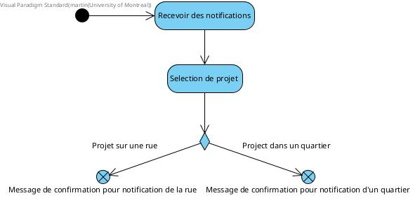

Cadre du projet
Introduction
Le projet MaVille vise à créer une application mobile dédiée à la gestion et à la communication des travaux publics et privés au sein d'une ville. Elle permet aux résidents d'accéder en temps réel aux informations sur les travaux en cours ou à venir dans leur quartier, de signaler des problèmes d'infrastructure, et de soumettre des requêtes pour des interventions spécifiques. L'application envoie également des notifications personnalisées aux utilisateurs concernant les perturbations dans leur zone. De plus, elle facilite la soumission de candidatures par les intervenants pour réaliser les travaux demandés par les résidents, offrant ainsi un espace de collaboration entre les citoyens, les entreprises et la municipalité.
Échéancier
| Membres | Semaine 3 | Semaine 4 | Semaine 5 | Semaine 6 |
|---|---|---|---|---|
| Martin | Git repository | Diagrammes | ||
| Jaden | Prototype | Scénarios | Solutions et besoins matériels | |
| Shermicah | CU | |||
| Christophe | Risques | Besoins non-fonctionnels |
Hypothèses (optionnel)
Présentation des hypothèses faites dans l'élaboration des exigences et l'analyse
Exigences
Après de nombreuses rencontres avec le client et une familiarisation avec les travaux publics et privés, nous avons préparé un glossaire rassemblant les termes et expressions clés caractérisant le domaine.
Glossaire
- Résident
- Un individu qui habite dans une zone directement ou indirectement affectée par des travaux de construction, et dont la vie quotidienne (mobilité, accès aux services, environnement) peut être influencée par ces interventions.
- Travaux
- L'ensemble des activités de construction, d'aménagement, de réparation, d'entretien ou de rénovation réalisées sur des infrastructures, des bâtiments, des voies publiques ou des installations.
- Chantier
- Zone délimitée où des travaux de construction ou de rénovation sont en cours.
- Entrave
- Obstruction temporaire ou perturbation causée par des travaux en cours, qui limite ou empêche la circulation comme des fermetures de routes.
- Intervenant
- Un individu ou un groupe officiellement enregistré auprès de la municipalité, doté des compétences et de l'autorisation nécessaires pour mener à bien un projet de travaux au nom de la ville.
- S'inscrire
- Le processus à réaliser pour se connecter en tant que résident ou intervenant.
- Requête
- Une demande formelle soumise par un résident via l'application, sollicitant l'exécution de travaux spécifiques dans une zone donnée. Cette requête peut concerner des interventions telles que la réparation d'infrastructures, l'aménagement d'espaces publics, ou d'autres actions d'amélioration du cadre de vie.
- Problème
- Toute anomalie ou dysfonctionnement nécessitant une intervention de la ville pour être résolu comme des dégradations d'infrastructures (nids-de-poule, trottoirs endommagés), des pannes d'éclairage public, des problèmes de sécurité, des obstructions sur la voie publique, ou tout autre incident affectant le bon fonctionnement ou la qualité de vie dans l'espace public.
- Candidature
- Proposition formelle soumise par un intervenant afin de réaliser le projet en réponse à une requête de travaux émise par un résident.
- Notifications
- Messages envoyés par voie numérique, conçus pour tenir les résidents informés en temps réel de tout changement ou évolution concernant les projets de travaux dans leur quartier. Ces alertes permettent aux citoyens de rester au courant des nouvelles interventions, des perturbations potentielles ou des mises à jour importantes liées à leur environnement immédiat.
Persona (optionnel)
Cas d'utilisation

Notes à propos du diagramme
- Les acteurs principaux sont ceux qui interagissent avec l'application, donc les
résidents et les intervenants. Les acteurs secondaires sont ceux qui font les
réparations, donc la ville et ses partenaires, les promoteurs immobiliers, les
entrepreneurs privés et les particuliers.
- Les résidents et les intervenants doivent créer un compte de façon similaire.
- Les résidents peuvent soumettre des requêtes de travail, consulter les travaux et
rester à jour avec les travaux en cours.
- Les intervenants peuvent consulter les listes de requêtes faites par les résidents,
créer des projets de travaux et faire des mis à jour sur leur progrès.
- Les acteurs secondaires agissent sur les travaux en cours.
Scénarios
Scénario principal
- Le résident ouvre l'application et sélectionne "Signaler un problème à la ville".
- Le résident entre les détails du problème (catégorie, description, localisation).
- Le système vérifie les informations saisies.
- Le système soumet le problème à la municipalité.
- Le résident reçoit une notification confirmant la soumission.
Scénarios alternatifs
Scénario principal
- L’intervenant accède à la liste des requêtes.
- L’intervenant sélectionne la requête à modifier.
- Le système affiche les détails de la requête.
- L’intervenant met à jour les informations.
- Le système enregistre les modifications et affiche une confirmation.
Scénarios alternatifs
Scénario principal
- L'utilisateur accède à la liste des requêtes soumises.
- L'utilisateur sélectionne la requête à annuler.
- Le système affiche les détails de la requête.
- L'utilisateur clique sur "Annuler".
- Le système demande une confirmation et annule la requête.
Scénarios alternatifs
Scénario principal
- Le résident accède à la section "Réclamations".
- Le résident sélectionne le projet concerné.
- Le résident remplit le formulaire de réclamation.
- Le résident soumet la réclamation.
- Le système enregistre la réclamation et notifie le résident.
Scénarios alternatifs
Scénario principal
- Le résident accède à la section "Vote sur les travaux".
- Le résident sélectionne un projet de travaux.
- Le résident attribue un vote ou une priorité au projet.
- Le système enregistre le vote du résident et le confirme.
Scénarios alternatifs
Scénario principal
- Le résident accède à la section "Historique des travaux".
- Le système affiche une liste des travaux dans la zone du résident.
- Le résident sélectionne un travail spécifique pour voir les détails.
- Le système affiche les détails du travail terminé.
Scénarios alternatifs
Scénario principal
- Le système détecte l’ajout d’un nouveau projet de travaux.
- Le système identifie les résidents concernés par la zone du projet.
- Le système envoie une notification à tous les résidents identifiés.
- Les résidents reçoivent une notification dans leur application.
Scénario principal
- L’intervenant accède à la section "Rapports de travaux".
- L’intervenant sélectionne les paramètres pour générer un rapport (période, type de travaux, etc.).
- Le système génère un rapport basé sur les critères sélectionnés.
- L’intervenant télécharge le rapport.
Scénario principal
- Le résident accède à l'option "Consulter les travaux en cours ou à venir".
- Le système affiche une liste des travaux en cours ou planifiés dans la région du résident.
- Le résident peut cliquer sur un travail spécifique pour voir plus de détails (dates, zones affectées, etc.).
Scénarios alternatifs
Scénario principal
- Le système détecte un changement de statut pour un travail dans le secteur du résident.
- Le système envoie une notification automatique au résident.
- Le résident reçoit la notification sur son appareil.
Scénario principal
- Le résident accède à la section "Délai des travaux".
- Le système affiche les délais estimés pour chaque travail.
- Le résident consulte les délais affichés pour un travail spécifique.
Scénario principal
- Le résident accède à la section "Suggestions d’améliorations".
- Le résident entre les détails de sa suggestion.
- Le système enregistre et soumet la suggestion à la ville.
- Le résident reçoit une confirmation de soumission.
Scénario principal
- La ville accède à la section "Suggestions des résidents".
- Le système affiche une liste des suggestions soumises par les résidents.
- La ville peut consulter les détails de chaque suggestion.
Diagramme d'activités
Diagramme d'activités pour l'ouverture de l'application
Diagramme d'activités pour la consultation de travaux
Diagramme d'activités pour l'inscription au notifications
Diagramme d'activités pour la planification participative
Diagramme d'activités pour la soumission d'une requête
Diagramme d'activités pour signaler un problème
Analyse
Risques
- Redondance des requêtes.
Justification: Si plusieurs résidents créent plusieurs requêtes pour le même problème, cela peut fausser la perception de l’urgence ou de l’importance des autres problèmes dans la ville. Les intervenants peuvent décider de négliger d’autres problèmes importants qui n’ont été signalés qu’une fois ou de prioriser de manière erronée des problèmes qui semblent plus fréquents en raison de la redondance des requêtes.
Solution: Plutôt que d'accepter une nouvelle requête identique, l'application peut informer le résident par notifications qu'un problème similaire a déjà été signalé. Il pourrait alors avoir la possibilité de suivre la requête existante pour être tenu au courant des mises à jour ou de l’état d’avancement de la résolution du problème. - Problèmes de sécurité.
Justification: Si l’application collecte des informations personnelles, comme l'adresse résidentiel, il pourrait y avoir un risque d’atteinte à la vie privée ou de cyberattaques.
Solution: Offrir aux utilisateurs la possibilité de personnaliser les autorisations de l’application (accès à la localisation, notifications, données personnelles) et de les modifier à tout moment. - Interface non intuitive.
Justification: Si l'application ne possède pas une interface intuitive et conviviale, les utilisateurs risquent de ne pas vouloir l'utiliser, rendant ainsi l'application inefficace.
Solution: Réaliser plusieurs tests utilisateurs pour comprendre leurs besoins et concevoir une interface simple et conviviale selon leurs préférences. - Application non-disponible à cause d'un manque de connectivité.
Justification: La non-disponibilité de l'application dûe à un manque de connectivité pourrait causer une frustration parmi les utilisateurs.
Solution: Prévoir des fonctionnalités hors-ligne, permettant aux résidents de soumettre des requêtes et de recevoir des informations même sans connexion internet.
Besoins non-fonctionnels
- Performance:
L'application doit être rapide et réactive pour éviter les ralentissements ou les temps de chargement excessifs et ainsi permettre une bonne expérience utilisateur. - Compatibilité:
L’application doit fonctionner de manière fluide sur différents systèmes d'exploitation (iOS, Android) et appareils, avec une interface adaptative pour divers formats d'écran. - Fiabilité:
L'application doit être stable et capable de fonctionner de manière continue sans interruption. Elle doit minimiser les risques de plantage et garantir un temps de disponibilité élevé. - Sécurité:
L'application doit garantir un haut niveau de protection des données personnelles des utilisateurs pour éviter les violations de la confidentialité. - Personnalisation:
L'interface doit être personnalisable afin de permettre à l'utilisateur d'adapter les fonctionnalités de l'application à ses préférences personnelles. Cela contribue à améliorer la satisfaction utilisateur.
Besoins matériels
Nous allons utiliser un serveur de base qui peut être hébergé sur un serveur local. Cela nous permettra d’héberger notre application sans avoir à gérer des machines complexes. Nous utiliserons une base de données relationnelle SQL (MySQL). La base de données sera donc hébergée directement sur le serveur local. Pour garder cela simple, nous allons stocker les fichiers tels que les images des problèmes signalés sur le système de fichiers local du serveur. Les fichiers pourront être sauvegarder dans un fichier spécifique nommé «téléversements.»
Solution de stockage
Pour le stockage, nous utiliserons une base de données relationnelle SQL comme MySQL ou SQLite. Ces bases de données nous permettrons de gérer les entités du (résidents, intervenants, problèmes signalés, requêtes de travail) en utilisant des tables et des relations simples.
- Résidents : Une table « résidents » contenant les informations de chaque résident (nom, adresse, email, etc.) .
- Intervenants : Une table « intervenants » avec les informations des intervenants (nom, métier, etc.) .
- Problèmes signalés : Une table « problèmes » qui stocke les détails des problèmes signalés (description, date, type de problème, etc.) .
- Requêtes de travail : Une table « requêtes » pour suivre les requêtes soumises par les intervenants ou les résidents.
Pour le stockage des fichiers (comme les photos des problèmes signalés), nous utiliserons simplement le système de fichiers local du serveur. Les fichiers pourront être téléchargés via l’API et seront stockés dans un dossier spécifique sur le serveur.
Une API REST basique sera mise en place pour permettre aux utilisateurs (résidents, intervenants, etc.) d’interagir avec les données.
- « POST /problemes » : Pour qu'un résident soumette un problème signalé.
- « GET /problemes » : Pour consulter les problèmes signalés.
- « POST /requête » : Pour qu'un intervenant soumette une requête de travail.
- « GET /requête » : Pour consulter la liste des requêtes.
Solution d'intégration
Notre approche d’intégration se concentre sur une architecture de micro-services. Nous utiliserons des API RESTful pour les communications entres les différentes composantes. Nous utiliserons aussi des requêtes API pour récupérer directement les informations de la ville (par exemple, la liste des travaux en cours) sous forme de JSON. Ces données seront stockées ou utilisées directement dans notre système. Des appels à l’API seront réguliers afin d’assurer que le contenu est souvent mis à jour. La gestion du code se fera avec Git. Cela nous permettra de pousser nos modifications manuellement au fur et à mesure de la conception.
Prototype
Instructions pour tester le prototype :
- Assurez-vous d'avoir Java Development Kit (JDK) installé sur votre système (version 8 ou supérieure).
- Compilez le fichier source Java : javac Main.java
- Lancez le programme. (java Main)
- Au menu principal, vous pouvez :
- Vous connecter avec l'un des comptes préconfigurés.
- Créer un nouveau compte résident.
- Quitter le programme.
- Après la connexion en tant que résident, vous verrez le menu résident avec les options pour signaler un problème, consulter les travaux, etc.
- Testez chaque option du menu pour vérifier qu'elle affiche le message approprié.
- Utilisez l'option "Retour au menu principal" pour revenir au menu de connexion/inscription.
Ce prototype n’est qu’une version abrégée du produit recherché. Il n’y a pas de compte prédéfini ce qui vous permet de naviguer à travers les différentes options du menu sans devoir vous enregistrer réellement.